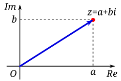

Complex Analysis
2026-06-26
Chapter 1 Complex Numbers
A complex number is an expression of the form \(z = x+iy\), where \(x\) and \(y\) are real numbers. The component \(x\) is called the real part of \(z\), and \(y\) is the imaginary part of \(z\). We will denote these by \[\begin{align*} x &= \operatorname{Re}z, \\ y &= \operatorname{Im}z. \end{align*}\]
The set of complex numbers forms the complex plane, which we denote by \(\mathbb{C}\). We denote the set of real numbers by \(\mathbb{R}\), and we think of the real numbers as being a subset of the complex plane, consisting of the complex numbers with imaginary part equal to zero.
The correspondence \[\begin{align*} z = x+iy \longleftrightarrow (x,y) \end{align*}\]
is a one-to-one correspondence between complex numbers and points (or vectors) in the Euclidean plane \(\mathbb{R}^2\). The real numbers correspond to the \(x\)-axis in the Euclidean plane. The complex numbers of the form \(iy\) are called purely imaginary numbers. They form the imaginary axis \(i\mathbb{R}\) in the complex plane, which corresponds to the \(y\)-axis in the Euclidean plane.
1.0.1 Basic Definitions and Algebra
- A complex number has the form \(z = a + ib\) where \(a, b\) are real numbers
- \(a\) is the real part: \(\text{Re}(z) = a\)
- \(b\) is the imaginary part: \(\text{Im}(z) = b\)
- A number is purely imaginary if \(a = 0\)
- A number is real if \(b = 0\)
- Zero is the only number that is both real and purely imaginary
1.0.3 Complex Conjugate
- The conjugate of \(z = a + ib\) is \(\bar{z} = a - ib\)
- Properties:
- \(\overline{z_1 + z_2} = \bar{z}_1 + \bar{z}_2\)
- \(\overline{z_1 \cdot z_2} = \bar{z}_1 \cdot \bar{z}_2\)
- \(\overline{\left(\frac{z_1}{z_2}\right)} = \frac{\bar{z}_1}{\bar{z}_2}\)
- \(z\) is real if and only if \(z = \bar{z}\)
- \(z\) is purely imaginary if and only if \(z = -\bar{z}\)
- Expressing real and imaginary parts using conjugate:
- \(\text{Re}(z) = \frac{z + \bar{z}}{2}\)
- \(\text{Im}(z) = \frac{z - \bar{z}}{2i}\)
1.0.4 Absolute Value (Modulus)
- The absolute value or modulus of \(z = a + ib\) is:
- \(|z| = \sqrt{a^2 + b^2} = \sqrt{z\bar{z}}\)
- Properties:
- \(|z| \geq 0\) for all \(z\), with equality if and only if \(z = 0\)
- \(|z_1 \cdot z_2| = |z_1| \cdot |z_2|\)
- \(\left|\frac{z_1}{z_2}\right| = \frac{|z_1|}{|z_2|}\) for \(z_2 \neq 0\)
- \(|z_1 + z_2| \leq |z_1| + |z_2|\) (Triangle inequality)
- \(\left| |z_1| - |z_2| \right| \leq |z_1 - z_2|\)
1.0.5 Important Inequalities
Triangle Inequality: \(|z_1 + z_2| \leq |z_1| + |z_2|\)
- Equality holds if and only if \(\frac{z_1}{z_2} > 0\) (i.e., the ratio is positive real)
\(-|z| \leq \text{Re}(z) \leq |z|\)
- Equality on right when \(z\) is positive real
\(-|z| \leq \text{Im}(z) \leq |z|\)
Cauchy’s Inequality: \(|a_1b_1 + a_2b_2 + \ldots + a_nb_n|^2 \leq (|a_1|^2 + \ldots + |a_n|^2)(|b_1|^2 + \ldots + |b_n|^2)\)
- Equality holds if and only if the \(a_i\) are proportional to the \(b_i\)
1.1 Geometric Representation
1.1.1 The Complex Plane
- A complex number \(z = a + ib\) corresponds to the point \((a,b)\) in the plane
- The \(x\)-axis is called the real axis
- The \(y\)-axis is called the imaginary axis
- The plane is called the complex plane

1.1.2 Vector Interpretation
- Complex numbers can be represented as vectors from the origin
- Vector addition corresponds to complex addition
- The length of the vector is \(|z|\)
- The distance between points \(z_1\) and \(z_2\) is \(|z_1 - z_2|\)
1.1.3 Polar Form
- A complex number can be written in polar form:
- \(z = r(\cos\theta + i\sin\theta)\) where \(r = |z|\) and \(\theta = \arg(z)\)
- \(r\) is the modulus: \(r = |z| = \sqrt{a^2 + b^2}\)
- \(\theta\) is the argument or amplitude: \(\theta = \arg(z)\)
- Properties of polar form:
- For \(z_1 = r_1(\cos\theta_1 + i\sin\theta_1)\) and \(z_2 = r_2(\cos\theta_2 + i\sin\theta_2)\):
- \(z_1z_2 = r_1r_2[\cos(\theta_1 + \theta_2) + i\sin(\theta_1 + \theta_2)]\)
- \(\arg(z_1z_2) = \arg(z_1) + \arg(z_2)\)
- \(\arg\left(\frac{z_1}{z_2}\right) = \arg(z_1) - \arg(z_2)\)
1.1.4 De Moivre’s Formula
- For \(z = r(\cos\theta + i\sin\theta)\):
- \(z^n = r^n(\cos n\theta + i\sin n\theta)\)
- For \(r = 1\):
- \((\cos\theta + i\sin\theta)^n = \cos n\theta + i\sin n\theta\)
1.1.5 Roots of Complex Numbers
- The \(n\)-th roots of \(z = r(\cos\theta + i\sin\theta)\) are:
- \(\sqrt[n]{z} = \sqrt[n]{r}\left[\cos\left(\frac{\theta + 2\pi k}{n}\right) + i\sin\left(\frac{\theta + 2\pi k}{n}\right)\right]\) for \(k = 0, 1, 2, \ldots, n-1\)
- There are \(n\) distinct \(n\)-th roots of any non-zero complex number
- These roots have equal moduli and are equally spaced around a circle
- For \(z = 1\), the roots are called the \(n\)-th roots of unity
1.1.6 Equations in the Complex Plane
- Circle with center \(a\) and radius \(r\): \(|z - a| = r\)
- In algebraic form: \((z - a)(\bar{z} - \bar{a}) = r^2\)
- Straight line: \(z = a + bt\) where \(t\) is a real parameter
- Two lines are parallel if \(b'\) is a real multiple of \(b\)
- Lines are orthogonal if \(\frac{b'}{b}\) is purely imaginary
- The angle between lines is \(\arg\frac{b'}{b}\)
1.1.7 Stereographic Projection and the Riemann Sphere
The extended complex plane is the complex plane together with the point at infinity. We denote the it by \(C^* = c\cup\{\infty\}\). - The extended complex plane includes \(\infty\) and can be represented on a unit sphere - Under stereographic projection, the point \((x_1, x_2, x_3)\) on the sphere corresponds to: - \(z = \frac{x_1 + ix_2}{1 - x_3}\)
- The north pole \((0,0,1)\) corresponds to \(\infty\)
- Properties:
- Circles on the sphere correspond to circles or lines in the plane
- The distance formula: \(d(z,z') = \frac{2|z-z'|}{\sqrt{(1+|z|^2)(1+|z'|^2)}}\)
- The sphere is often called the Riemann sphere
1.1.8 Key Formulas and Results
\(z\bar{z} = |z|^2 = a^2 + b^2\)
\(\frac{1}{z} = \frac{\bar{z}}{|z|^2} = \frac{a - ib}{a^2 + b^2}\)
\(z^n = r^n(\cos n\theta + i\sin n\theta)\)
\(\sqrt[n]{z} = \sqrt[n]{r}\left[\cos\left(\frac{\theta + 2\pi k}{n}\right) + i\sin\left(\frac{\theta + 2\pi k}{n}\right)\right]\) where \(k = 0, 1, \ldots, n-1\)
Triangle inequality: \(|z_1 + z_2| \leq |z_1| + |z_2|\)
Cauchy’s inequality: \(\left|\sum_{i=1}^{n} a_i\bar{b}_i\right|^2 \leq \left(\sum_{i=1}^{n}|a_i|^2\right)\left(\sum_{i=1}^{n}|b_i|^2\right)\)
The equation of a circle: \(|z - a| = r\)
The roots of unity: \(\omega^k\) where \(\omega = \cos\frac{2\pi}{n} + i\sin\frac{2\pi}{n}\) and \(k = 0, 1, \ldots, n-1\)